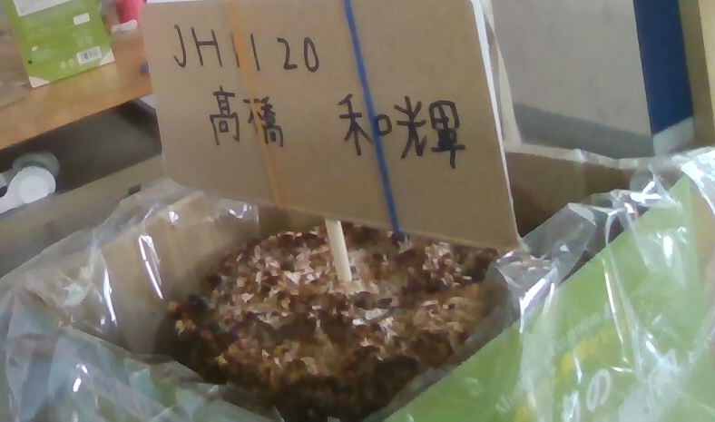
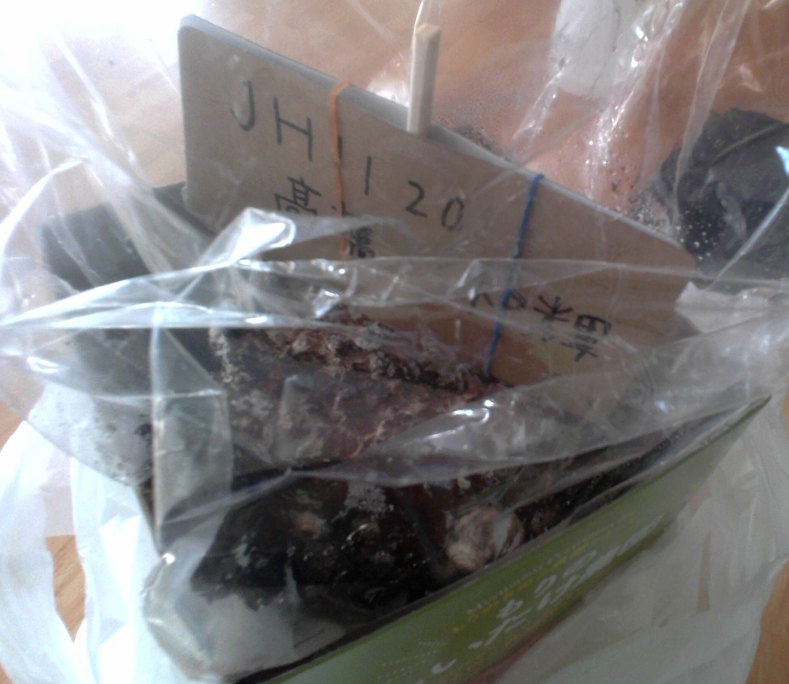
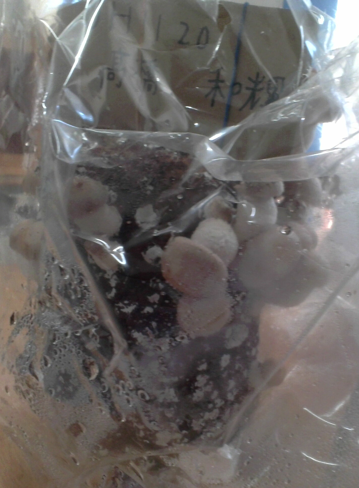
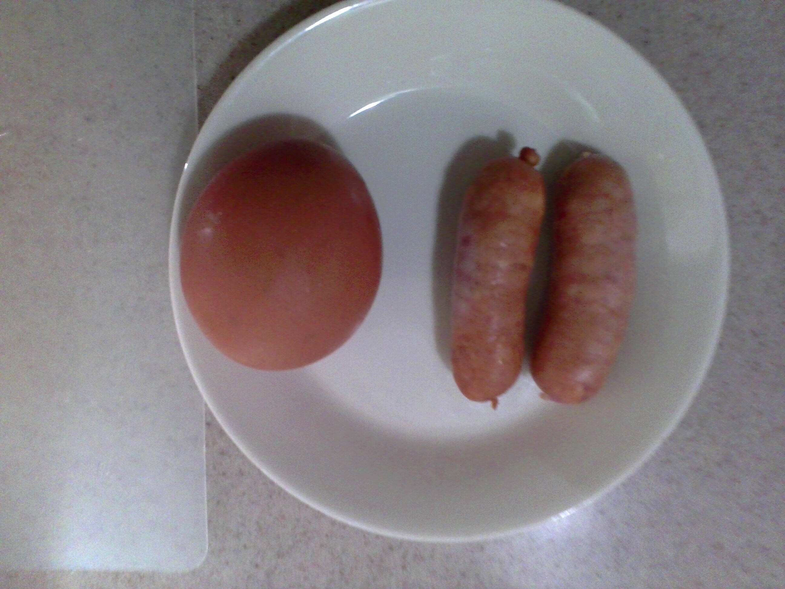
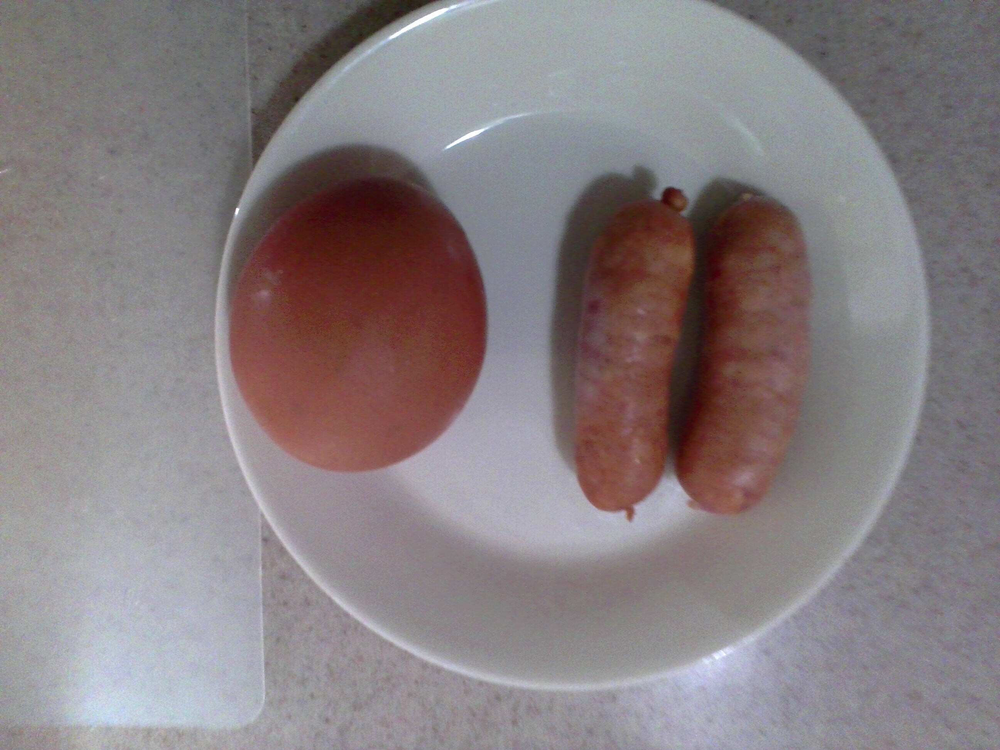
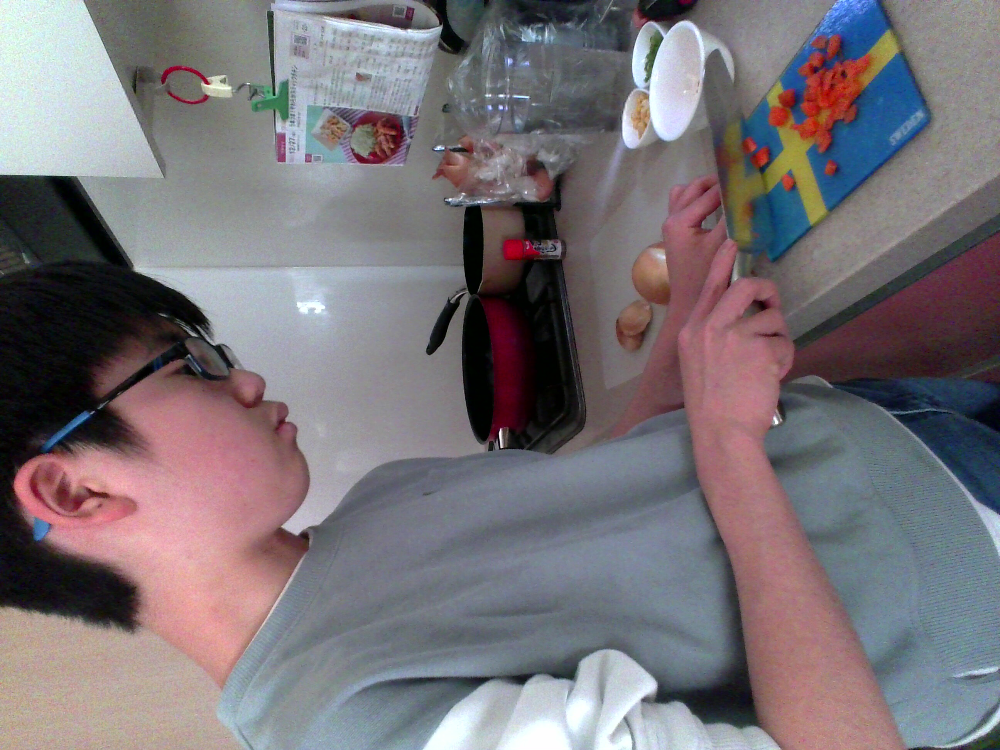
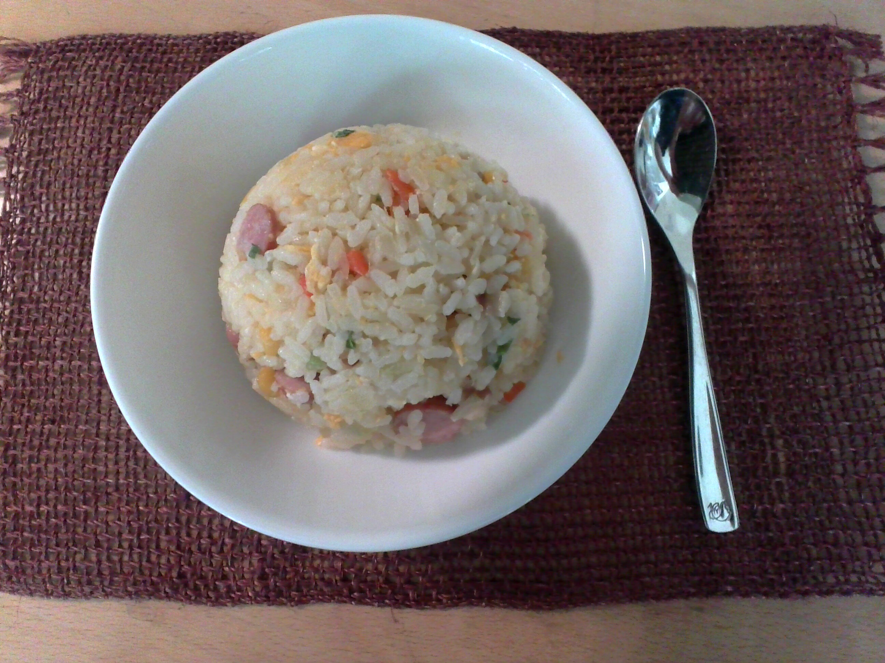

キノコの成長様子と調理風景
・このページでは、僕が育てたキノコの成長過程と、それを使って作った料理の写真が並んでいます。
栽培初日 11/06

栽培初日。水をやったがまだ動きはなし。
栽培三日目 11/08

少しキノコの種のようなものが出てきた。ここから成長していくのに期待したい。
栽培六日目 11/11

墓から出さないと入らなくなってくるほど育ってきた。もう収穫してもいいくらいだが、あと少し待つ。
栽培八日目（最終日！）

思ったよりも大きいキノコが！収穫早くしたい！
収穫

周り見ると個数は少なかったけれど十分立派なものが多く取れた！とても満足！
調理
しいたけを使った料理を自分で作る！メニューは「チャーハン」！
 

材料
米・にんじん、玉ねぎ、きのこ、とうもろこし、ネギ
調理風景
美味しく作りたい！でも切るのも焼くのも大苦戦…
完成・食べる！
味はまあまあ。ちょっと味付けが薄かったか？でもふつうに美味しいので良し！！
全体を通しての感想
きのこを育てる作業は、お手軽なキッドのお陰で、作業が楽になりつつ、多くのきのこを収穫できたなと感じた。
料理に関しては、調理が苦手な自分的には、よく頑張ったほうだと思える出来になった。